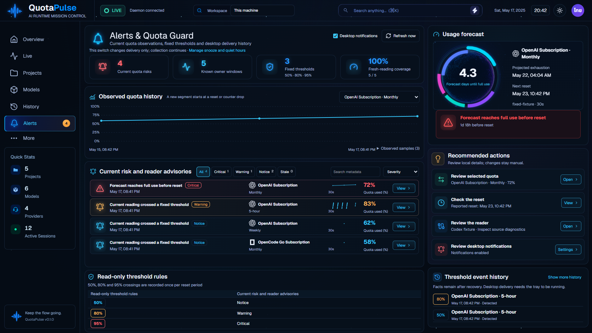

ผลตรวจและข้อจำกัด · ภาพรวมทั้ง8หน้ารุ่น123
แอปจริงผ่าน API กับฐานข้อมูลสังเคราะห์แยกสำหรับทดสอบ ปุ่มหลักคือ Refresh จริง และ Alerts แสดง4ความเสี่ยงจริงครบในกรอบเดิม ยังไม่ใช่การรับรองความเหมือน99–100% หรือแพ็กแอปรุ่นใหม่

ตัวอย่าง: Alerts ไทยสว่าง1536px · Alerts ไทยสว่าง390px · Projects ไทยสว่าง390px